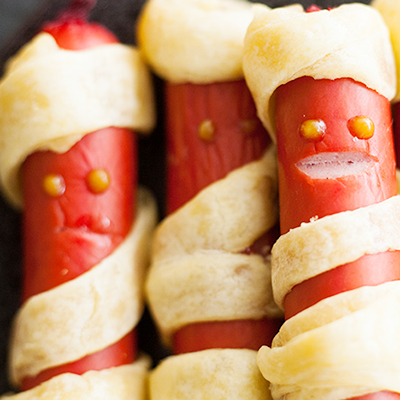

Les ingrédients
- des saucisses (types Knackis)
- de la pâte feuilletée
- de la moutarde
La recette
- Commence par entourer les saucisses de fines bandes de pâte feuilletée. Recouvre la moitié de la saucisse d'un côté et uniquement l'extrémité de l'autre côté. Tu pourras ainsi créer le corps et la tête !
- Fais maintenant cuire les saucisses-momies au four pendant 15-20 min jusqu'à ce qu’elles soient bien dorées et croustillantes. Demandes l’aide d’un adulte.
- Tu peux ajouter une pointe de moutarde pour les yeux ou simplement faire une petite incision avec le bout d'un couteau pointu.